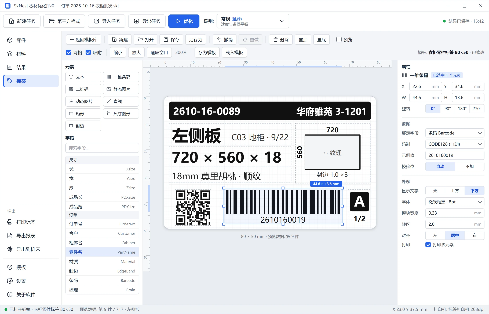

+1~5%
板材利用率提升
同批订单对比常规排样
700+
件订单数十秒出方案
整批一次优化
10
种开料锯格式
导出即上机
100%
方案可切
计划刀数 = 实际刀数
兼容
开料锯
- 豪迈HOMAG
- 极东KDT
- 南兴NanXing
- 豪德HOLD
- 龙德LongDe
- 国产电子锯
- SlwControl
导入
- SAW
- PTX
- XML
- HD
- YX
- BIN
- Excel / CSV
标签
- 条码
- 二维码
- 零件图
- 封边标识
01 · YIELD
每张板，多排几件
整批订单数十秒出方案，利用率更高，加工不增负担。
- 快速 · 常规 · 最优三档，按订单选择
- 纹理、修边、叠切全部照顾到
- 可用余料自动登记、下次优先用
02 · CUT PATH
上机之前，每一刀都看得见
逐刀预览每个样式；计划多少刀，机器就切多少刀。
- 刀数更少，掉头更少
- 任意样式可手动调整
 刀路步骤
刀路步骤
03 · LABELS & REPORTS
标签、报表，一键出齐
标签按车间习惯设计；利用率、余料报表导出 PDF / Excel。
- 条码、二维码、零件图、封边标识
- 整批用料一屏总览

功能一览
订单与开料锯之间，所需的一切
订单直接导入
开料文件、Excel 清单直接打开。
整批优化
三档级别，秒级出方案。
刀路预览
上机前逐刀确认。
余料与库存
余料再利用，母板库存管理。
标签与报表
条码、二维码，PDF / Excel。
导出上机
10 种格式，或直达 SlwControl。
规格参数
规格参数
| 板材类型 | 刨花板、中纤板、多层板、生态板等矩形板材 |
|---|---|
| 导出上机 | 豪迈、极东、南兴、豪德、龙德、国产机通用 SAW、AutoCUT、PTX 与 SlwControl |
| 数据输出 | 开料锯加工文件、零件标签、PDF / Excel 报表、余料清单 |
| 运行环境 | Windows 10 / 11；中文、English 等多语言 |
| 授权方式 | 单机授权，免费试用 |
搭配使用